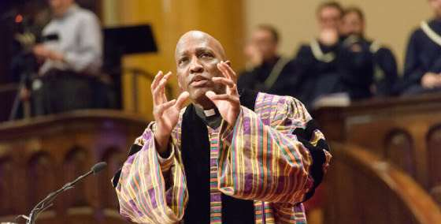

PAR JNS | 21 JANVIER 2022
"Tu ne colporteras pas de fausses rumeurs. Tu ne prêteras pas la main au méchant
en témoignant injustement. (Exode 23, 1)

Titre original de l’article traduit « Top Presbyterian reverend in MLK Day sermon: Israel ‘enslaves’ Palestinians ».
Un pasteur presbytérien de premier plan, a accusé dimanche Israël de réduire en esclavage les Palestiniens et les Juifs américains et de ne pas agir suffisamment pour mettre un terme à cette situation. « L'occupation continue en Palestine/Israël est un [état] esclavagiste au 21e siècle et devrait être aboli immédiatement », a déclaré le révérend Dr. J. Herbert Nelson II, secrétaire en exercice de l'Assemblée générale de l'Église presbytérienne des États- Unis. « Compte tenu de l'histoire des humbles débuts juifs et de la persécution, il ne devrait y avoir aucune ambiguïté quant à la marginalisation et l'asservissement éthiques, moraux et déshumanisants d'autres êtres humains. » Nelson a émis ces remarques au cours de sa prise de parole lors de la Journée Martin Luther King. Leur contenu a depuis été publié sur le site Web de l'Église presbytérienne des États-Unis. « Les États-Unis d'Amérique doivent être un facteur d'influence majeur pour qualifier cette injustice d'immorale et d'intolérable », a-t-il poursuivi. « J'espère également que la communauté juive des États-Unis appuiera l'appel à rejoindre le gouvernement américain pour mettre fin à l'esclavage immoral. » Des dirigeants et des organisations juives se sont élevés contre ces déclarations, qui ont été émises un jour seulement après qu'un terroriste armé ait pris en otage quatre Juifs dans une synagogue du Texas. Les Juifs s'en sont sortis sains et saufs et l'agresseur a été tué. « Utiliser la mémoire du Dr Martin Luther King Jr. pour faire des allégations liant le conflit israélo-palestinien à l'esclavage, et appeler ensuite la communauté juive américaine à user de son ‘influence’ sur le gouvernement américain, est non seulement injuste, mais c'est également dangereux », a déclaré la Conférence des présidents des principales organisations juives américaines dans un communiqué. « La perception du ‘pouvoir juif’ semble avoir été un élément clé de la motivation déformée du terroriste qui a retenu quatre personnes en otage moins de 48 heures avant l'attaque haineuse du révérend Nelson. » Les Fédérations juives d'Amérique du Nord ont également réagi, qualifiant la déclaration d' « inacceptable » et de « désolante ». L'organisation a déclaré que « ce genre de caractérisations déformées enhardissent les extrémistes ». Selon son site Web, l'Église presbytérienne des États-Unis est une organisation qui chapeaute et vise à rassembler les congrégations, les communautés de culte, les conseils intermédiaires, les réseaux de mission et d'autres parties de l'écosystème de l'Église.
Traduction française de M.R. Macina, mise en ligne sur Academia.edu, le 23.01.22